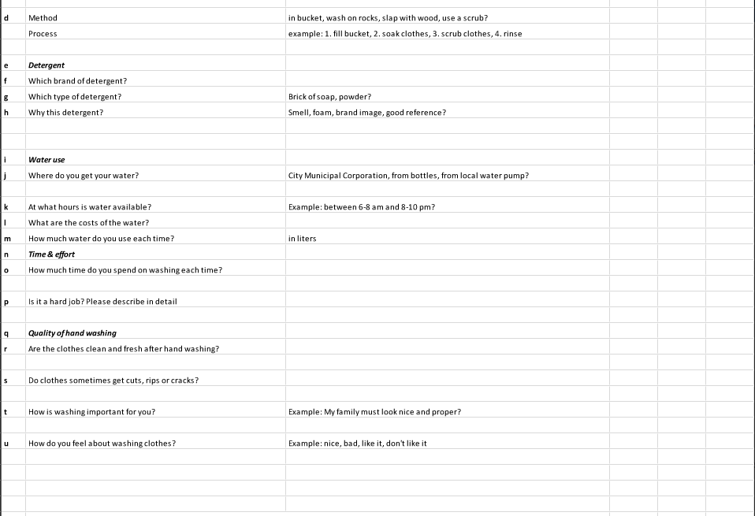
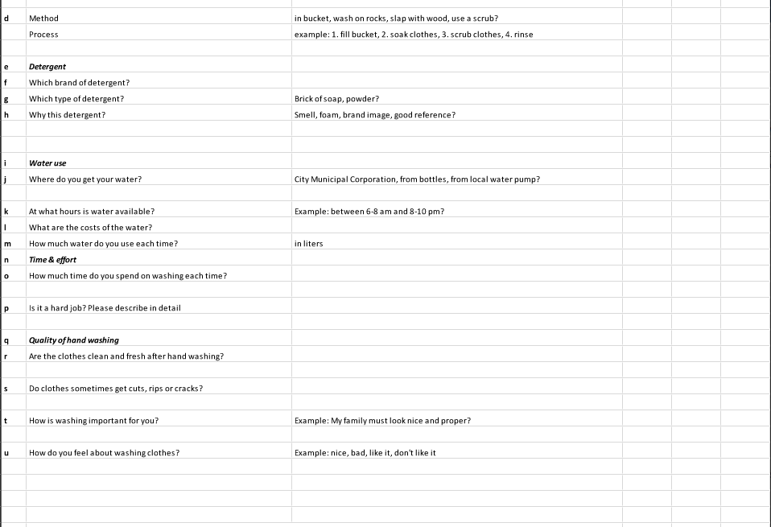

Worked (in a team of 4) with Mr. Coen, a design researcher from Holland, for his project on developing a low-cost compact washing machine that runs without electricity. The user group targeted was low-income households in India who have space as well as electricity problems. Designed a questionnaire and conducted user survey and analysis from field visits to a number of low budget households.
Image Reference: http://changeclub.nl/wp-content/uploads/2014/09/Hyperwash-01.jpg
The questionnaire that was used to conduct interviews and collect data:
 



Project mentor:(Coursera Course) Professor Scott Klemmer, University of California San Diego (Coursera - Introduction to HCI)
Idea 1: Smart Drive and Smart Pick up - This application learns your daily chores like for example groceries or laundry. After which using google maps, while you are on your way to your destination ( e.g.office), it gives alerts and time estimates for all groceries or laundry places along the route. It gives you the most time efficient suggestions depending on your destination's location. It also sense traffic to be able to give suggestions. Also, it allows users to contact laundry or groceries nearby while they are stuck in traffic. One simple press of a button gives all nearby laundry/grocery places an alert. The first to respond comes and does delivery to wherever you are stuck in traffic. Thus, optimum usage of time!
Idea 2: Clean Community Roads - This application's main goal is to maintain cleaner roads for pedestrians. It allows users to form teams and click/share pictures of roads that need cleaning after which they can set "CLEAN" Challenges. They can upload and share videos of their team completing the challenge. People can then vote for the best teams using this application as well as share them on social media platforms. They can also post videos on efficient waste disposal, organic manure and such topics on the discussion forums.

Idea 3: Jetsons efficient bicycle: This bicycle converts the mechanical energy that goes into peddling to run a small AC as well as to light up the enclosed glass surface and the bicycle's headlights. The user gets to sit in an enclosed glass cabin like structure.


1) We identified whether a given sequence is a Cyclin protein or not using support vector machine (SVM). Cyclin proteins are a family of proteins that control the cell progression.
2) The features used for classification were Amino Acids (20 features), Dipeptide bonds (400 features), Secondary Structure Composition (SSC), Position Specific Substitution Matrix (PSSM) Composition and Hybrid composition.
3) We carried out this classification using Linear, Polynomial, RBF and sigmoidal kernels after which we compared the results obtained from the different kernels.
The first image is a representational image of Cyclin protiens
Source: http://www.cherrybiotech.com/portfolio/human-cells-temperature-control-of-cell-cycle-2